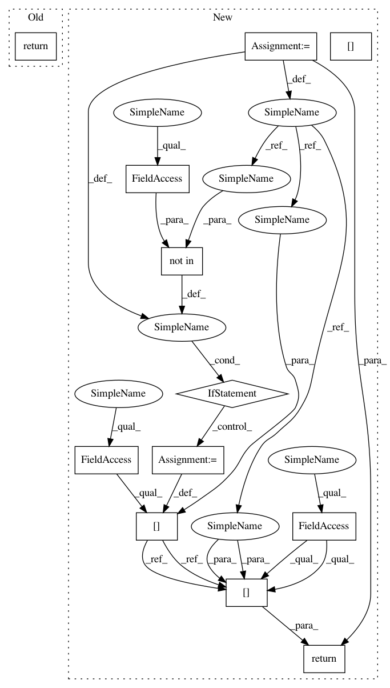

38a2c28f9885e13e080cd04ec1b967a19c427d63,qcengine/programs/mp2d.py,MP2DExecutor,get_version,#MP2DExecutor#,51
Before Change
candidate_version = "0.1"
from pkg_resources import safe_version
return safe_version(candidate_version)
def compute(self, input_data: "ResultInput", config: "JobConfig") -> "Result":
self.found(raise_error=True)
After Change
def get_version(self) -> str:
self.found(raise_error=True)
which_prog = which("mp2d")
if which_prog not in self.version_cache:
//command = [which_prog, "-version"]
//import subprocess
//proc = subprocess.run(command, stdout=subprocess.PIPE)
//self.version_cache[which_prog] = safe_version(proc.stdout.decode("utf-8").strip())
self.version_cache[which_prog] = safe_version("0.1")
return self.version_cache[which_prog]
def compute(self, input_data: "ResultInput", config: "JobConfig") -> "Result":
self.found(raise_error=True)
In pattern: SUPERPATTERN
Frequency: 3
Non-data size: 12
Instances
Project Name: MolSSI/QCEngine
Commit Name: 38a2c28f9885e13e080cd04ec1b967a19c427d63
Time: 2019-05-16
Author: lori.burns@gmail.com
File Name: qcengine/programs/mp2d.py
Class Name: MP2DExecutor
Method Name: get_version
Project Name: dmlc/dgl
Commit Name: 048f6d7a30ceb8d7f85190e927489215261fa106
Time: 2018-11-13
Author: minjie.wang@nyu.edu
File Name: python/dgl/graph_index.py
Class Name: GraphIndex
Method Name: edges
Project Name: MolSSI/QCEngine
Commit Name: 38a2c28f9885e13e080cd04ec1b967a19c427d63
Time: 2019-05-16
Author: lori.burns@gmail.com
File Name: qcengine/programs/torchani.py
Class Name: TorchANIExecutor
Method Name: get_version